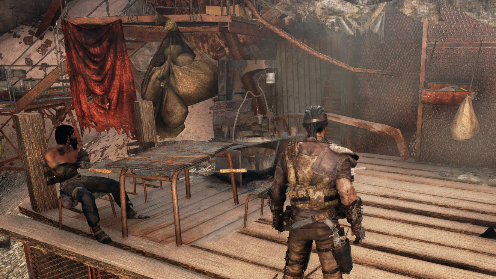
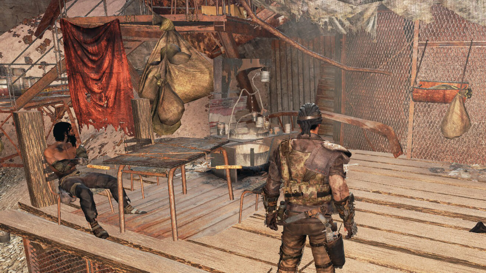
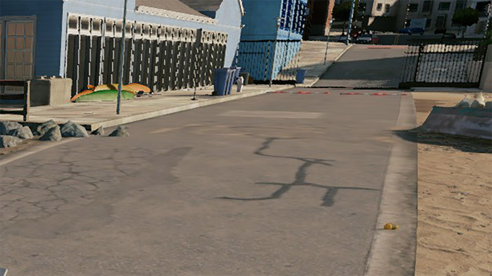
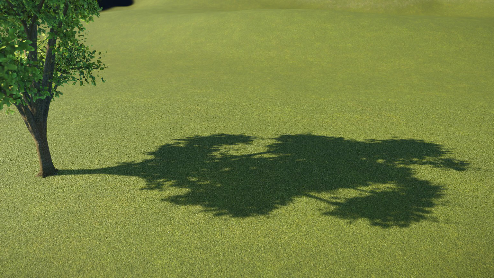
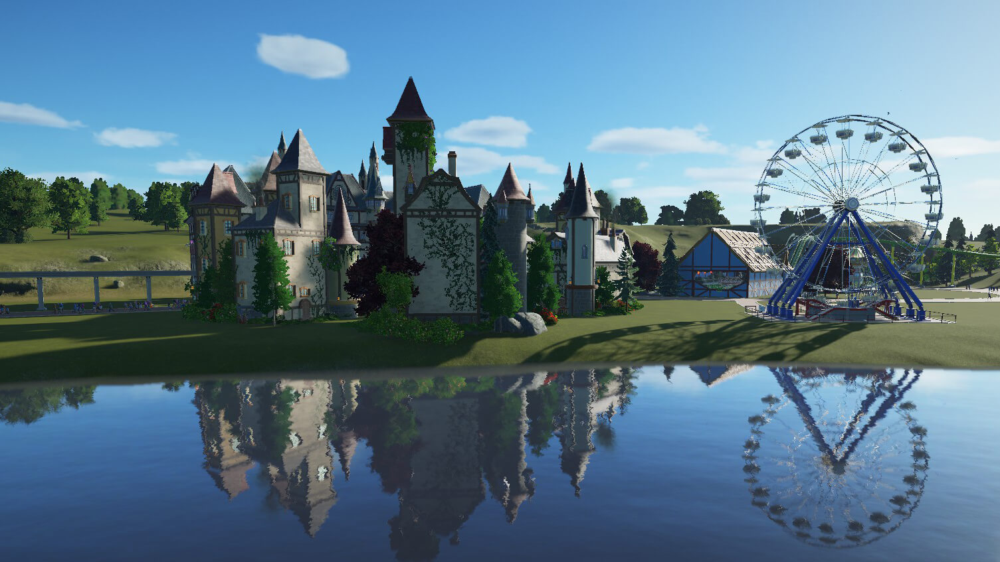
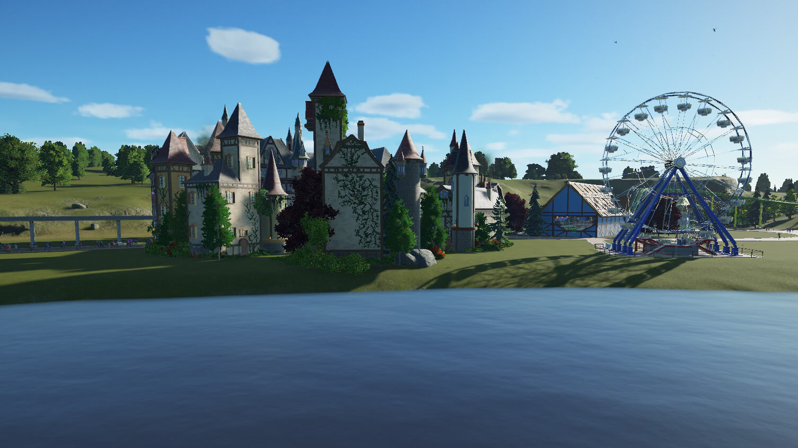

Texture Quality
This setting controls the resolution of the textures applied to game elements. Higher texture quality will make objects look better close up, but will require more VRAM. Texture quality typically does not impact framerate, as long as you have enough VRAM.
Low Textures vs High Textures
Anti-aliasing
Anti-aliasing smooths out jagged graphics. The need for Anti-aliasing decreases with resolution.
Here are some of the many kinds of Anti-aliasing you could see in a game:
- SSAA: Super sampling anti-aliasing. Uses a lot of processing power.
- MSAA: Multisample anti-aliasing. Usually an option in modern games. Performance Intensive.
- FXAA: Fast approximate anti-aliasing. Smallest performance cost. Can make the image look more blurry
- TXAA: Temporal anti-aliasing. Uses a bit more processing power than FXAA.
No AA vs MSAA
Ambient Occlusion
Ambient occlusion is a technique used for improving the quality of lighting in virtual environments.
- SSAO: Screen Space Ambient Occlusion
- HBAO: Horizon-Based Ambient Occlusion
- HDAO: High Definition Ambient Occlusion
No AO vs SSAO
- 
- 
Anisotropic Filtering
Also Known as Texture Filtering
Reduces the bluring of textures that are viewed at an angle. Usually you have a choice of the amount of filtering you want to apply: None, 2x, 4x, 8x, and 16x. This option has a minimal performance impact in games.
No AF vs 16x AF
- 
Shadow Quality
Usually, increasing the shadows quality increases the shadow map size. This will make shadows look less blurry and more accurate. If you are having FPS problems, shadows should be one of the first things you should try turning down.
- Dynamic Shadows: Shadows that are calculated in real-time based on object movement and the light source. Performance Intensive.
- Contact Hardening Shadows: Creates realistic soft shadows. Performance Intensive.
Low Shadows vs High Shadows
- 
Dynamic Refelections
Dynamic Reflections allow you to see objects mirrored in pools of water and other shiny surfaces. Can be performance intensive.
No Refelections vs Refelections
- 
- 